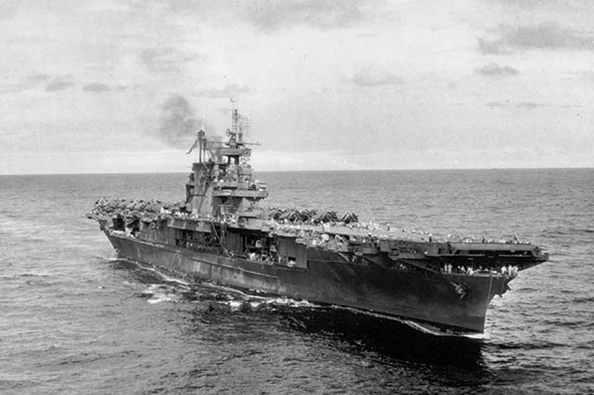

In its Dedicatory plaque, at the Enterprise Tower, U.S. Naval Academy, here
it is written that it is "The carrier that fought the most through the entire war...".
The USS Enterprise joined the war on December 7, 1941, after Japanese planes bombed Pearl Harbor.
Among the major engagements that occured in the Pacific, the Enterprise went through all except 2.
On May 14, 1945, a Kamikaze attack managed to criple the Enterprise, forcing it to leave the war.
As the ship managed to down numerous planes and ships, it then became known as the
Ultimately, the presence of the Enterprise, especially in the Pacific Sea and the events that surrounded the Philippines truly helped shaped the future of the country and the world.
Source from cv6.org.
Click here to see more picture of the Enterprise from businessinsider!